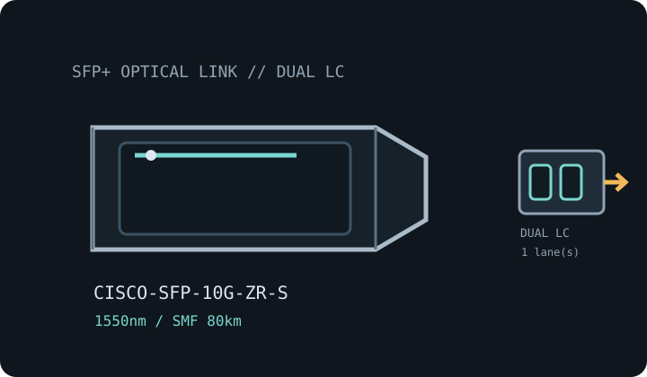

[ MODEL-SPECIFIC OPTICAL NETWORK HARDWARE ]
Cisco SFP-10G-ZR-S 10GBASE-ZR SFP+ Transceiver
1550nm long-reach 10GbE SFP+ optic for engineered single-mode fiber channels. Confirm exact module label and host qualification before installation.

IDENTIFICATION: Match the manufacturer name, exact PID/suffix and revision to the host compatibility listing. Stated line rate and maximum reach are specifications, not measured payload performance.
Model-specific specifications
| Dedicated subcategory | SFP transceivers: optical and copper |
|---|---|
| Exact model / ordering SKU | Cisco SFP-10G-ZR-S |
| Form factor and optical type | SFP+ hot-pluggable optical transceiver; 10GBASE-ZR (S-Class). |
| Ethernet rate and interface | 10GBASE-ZR / 10GbE; nominal 10 Gb/s Ethernet line rate. |
| Wavelength | 1550nm nominal. |
| Fiber medium and reach | G.652 single-mode fiber (SMF), up to 80km subject to the optical budget and dispersion. |
| Connector | Duplex LC/PC. |
| DOM / DDM | Cisco digital optical monitoring supported; actual accessible diagnostics depend on host software. |
| Operating temperature | Commercial operating case temperature: 0°C to 70°C. |
| Host switch/router compatibility | Confirm the exact SFP-10G-ZR-S PID against Cisco’s TMG matrix for the switch/router model and software release. The 80km figure is not universal for arbitrary fiber; engineered link budget, chromatic dispersion and receiver overload must be checked. A short span may require attenuation. |
| Variant and deployment caveat | The -S (S-Class) suffix is significant. Do not treat SFP-10G-ZR, ZR-S, ZR-X or third-party ZR-coded modules as interchangeable host qualifications. |
| Measured performance | No measured specimen throughput is claimed; link payload depends on both host ports, FEC, coding, protocol overhead, fiber plant and test method. |
Host qualification and installation
Confirm the exact SFP-10G-ZR-S PID against Cisco’s TMG matrix for the switch/router model and software release. The 80km figure is not universal for arbitrary fiber; engineered link budget, chromatic dispersion and receiver overload must be checked. A short span may require attenuation.
The -S (S-Class) suffix is significant. Do not treat SFP-10G-ZR, ZR-S, ZR-X or third-party ZR-coded modules as interchangeable host qualifications.
Clean and inspect fiber end faces, retain dust caps during storage, follow ESD precautions, and never look into an active optical port. Record the host model, port, software release, transceiver label and available DOM values when documenting a deployed link.
Manufacturer and standards sources
- Cisco 10GBASE SFP+ Modules Data SheetCisco’s SFP+ family datasheet covers ZR-S optics; TMG is the authoritative host/release/PID qualification lookup.
- Cisco Transceiver Module Group (TMG) compatibility matrixManufacturer lookup for transceiver PID, supported host platforms and software releases; confirm this exact labeled variant.
- IEEE 802.3 Ethernet standards familyEthernet PHY terminology and link-rate context; MSA-specific optics remain subject to their named module-family specifications.
Source links identify manufacturer documentation and qualification resources. Check the current documentation revision and exact hardware PID before deployment.